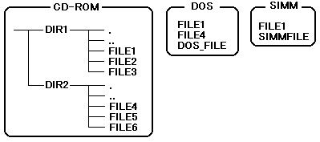

★PROGRAMMER'S GUIDE
★ファイルシステムライブラリ
★PROGRAMMER'S GUIDE
★ファイルシステムライブラリ
図6.1 ファイル構成例

取得したディレクトリ情報 | CD-ROM | DOS | SIMM |
|---|---|---|---|
. | . | ||
.. | .. | ||
FILE1 | FILE1× | FILE1× | FILE1 |
FILE2 | FILE2 | ||
FILE3 | FILE3 | ||
FILE4 | FILE4 | ||
DOS_FILE | DOS_FILE | ||
SIMMFILE | SIMMFILE |
取得したディレクトリ情報 | CD-ROM | DOS | SIMM |
|---|---|---|---|
. | . | ||
.. | .. | ||
FILE4 | FILE4× | FILE4 | |
FILE5 | FILE5 | ||
FILE6 | FILE6 | ||
FILE1 | FILE1× | FILE1 | |
DOS_FILE | DOS_FILE | ||
SIMMFILE | SIMMFILE |
void *(func)(void *obj, Sint32 err); /* エラー処理関数 */ void *obj; /* 登録されたオブジェクトへのポインタ */ Sint32 err_code; /* 発生したエラーコード */ (*func)(obj, err_code); /* エラー処理関数呼び出し */
★PROGRAMMER'S GUIDE
★ファイルシステムライブラリ